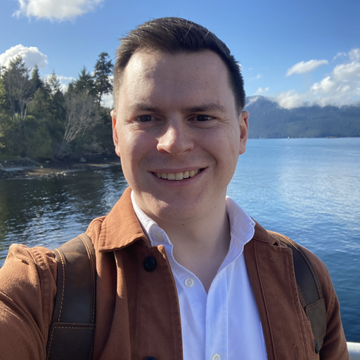

I am an astronomer, currently working as a Herzberg Instrument Science Fellow (Assistant Research Officer) at Canada's National Research Council, Herzberg Astronomy and Astrophysics in Victoria, British Columbia.
Before that, I completed my PhD at the University of Victoria under the supervision of Christian Marois, and my Bachelors in Physics and Bachelors in Computing from Queen's University.
My research interests lie in detecting exoplanets—planets orbitting nearby stars—in what I would call "creative" ways. These include developing new instruments and techniques to directly image fainter planets around their stars and developing modelling techniques to detect the orbital motion of planets through new combinations of stellar radial velocity, astrometric motion, direct imaging, interferometry, and so on.
I have strong interests in applied computational methods including astrostatistics, differentiable physics, and both high-performance and real-time computing. I advocate for the adoption of the Julia programming language in astronomy, and maintain several popular packages.
Email: William [dot] Thompson [at] nrc-cnrc [dot] gc [dot] ca
Office #332
NRC-Herzberg Astronomy and Astrophysics
5071 W Saanich Rd
Victoria, BC V9E 2E7
🐙